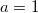
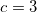
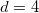
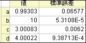

このチュートリアルを始める前に、NAGライブラリを使った積分フィットを読むことをお薦めします。そして、プログラミングに関する部分については、2つのチュートリアルは基本的に同じで、異なる点は、ここでは積分制限を持つフィットパラメータでのOrigin Cのフィット関数を定義することを学びますが、前のチュートリアルでは、積分制限での独立変数を定義します。また、ここでは別のNAG積分関数が使われています。
必要なOriginのバージョン:8.0 SR6
このチュートリアルでは、以下の項目について説明します。
例えば、次のモデルを使って、このページの一番下にあるサンプルデータ をフィットしましょう。
 を使って積分の独立変数を示していますが、
を使って積分の独立変数を示していますが、  はフィッティングの独立変数を示していることに注意して下さい。モデルのパラメータ
はフィッティングの独立変数を示していることに注意して下さい。モデルのパラメータ , , , は、サンプルデータから取得したいフィットパラメータです。データを準備するには、サンプルデータをOriginのワークシートにコピーする必要があります。フィットの手順は、前のチュートリアルと同じように行います。
, , , は、サンプルデータから取得したいフィットパラメータです。データを準備するには、サンプルデータをOriginのワークシートにコピーする必要があります。フィットの手順は、前のチュートリアルと同じように行います。
F9 を押して、フィット関数オーガナイザを開き、最初のチュートリアルと同様に、ユーザ定義の積分フィット関数 nag_integration_fitting_cosh をカテゴリーFittingWithIntegral に追加します。
| 関数名： | nag_integration_fitting_cosh |
| 実現方式： | ユーザ定義 |
| 独立変数： | x |
| 従属変数： | y |
| パラメータの名前： | a, b, c, d |
| 定義形式： | Origin C |
| 関数： |
「関数」ボックスの近くにあるボタン(アイコン)をクリックしてコードビルダを開き、次のようにフィット関数を定義して、コンパイルします。（Note:コンパイル後に関数を保存して関数オーガナイザダイアログに戻る事を忘れないでください。）
#include <origin.h> // ここにincludeファイルを追加します。 // 例えば、NAGライブラリからの関数でフィットする場合、 // ここにNAG関数のヘッダファイルを追加します。 #include <oc_nag8.h> // このファイルに定義したい他のOrigin C関数に対するコードをここに追加し、 // フィット関数でアクセスできるようにします。 struct user { double a, b, fitX; // fitX はフィット関数の独立変数です。 }; static double NAG_CALL f_callback(double x, Nag_User *comm) // x は被積分関数の独立変数です。 { struct user *sp = (struct user *)(comm->p); double aa, bb, fitX; // 一時変数としてNag_User 通信構造体のパラメータとして受け入れます aa = sp->a; bb = sp->b; fitX = sp->fitX; return cosh((x*x+bb*bb*fitX*fitX)/(bb+fitX))/(aa+(x*x+fitX*fitX)); } // 他のファイルがワークスペースにロードされ、コンパイルされていれば、 // そのファイルで定義されているC関数にアクセスでき、関数は上記でインクルードした //ヘッダファイルにプロトタイプがあります。 // 関数コード内でNLSFオブジェクトのプロパティとメソッドにアクセスできます。 // 関数の定義には、C言語のシンタックスを使います。 // 例えば、パラメータ名がP1の場合、関数定義に p1 と使うことはできません。 // 分数を使用する場合には、1/2のような整数の除算は0になり、0.5ではありません。 // 正しい値にするには、0.5または1/2.0を使います。 // より詳細な情報およびサンプルは、Originヘルプファイルの「ユーザ定義フィット関数」 // を参照してください。 //---------------------------------------------------------- // void _nlsfnag_integration_fitting( // フィットパラメータ: double a, double b, double c, double d, // 独立変数: double x, // 従属変数: double& y) { // 編集可能部分の開始 double epsabs = 0.00001, epsrel = 0.0000001, result, abserr; Integer max_num_subint = 500; // epsabsとepsrel、およびこの値を使って必要な精度に向上できるので、 // 必要な積分の精度を制御できます。 Nag_QuadProgress qp; static NagError fail; // integrand のパラメータを初期化するのにcall_back 関数を利用でき、 // 上記を行うには Nag_User 通信構造体を通して行います。 Nag_User comm; struct user s; s.a = a; s.b = b; s.fitX = x; comm.p = (Pointer)&s; d01sjc(f_callback, c, d, epsabs, epsrel, max_num_subint, &result, &abserr, &qp, &comm, &fail); // エラーメッセージを出力することで、エラーを調査するには、以下の行のコメントを解除します。 // if (fail.code != NE_NOERROR) // printf("%s\n", fail.message); // 次の3つのエラー以外は、入力パラメータが不正であるか //アロケーションエラーに当たります： NE_INT_ARG_LT NE_BAD_PARAM NE_ALLOC_FAIL // メモリーリークを避けるため、積分ルーチンを呼ぶ前にメモリのアロケーションを // 解放する必要があります。 if (fail.code != NE_INT_ARG_LT && fail.code != NE_BAD_PARAM && fail.code != NE_ALLOC_FAIL) { NAG_FREE(qp.sub_int_beg_pts); NAG_FREE(qp.sub_int_end_pts); NAG_FREE(qp.sub_int_result); NAG_FREE(qp.sub_int_error); } y = log(result); // 積分の対数結果を返すのは容量が大きくなることもあるので、 // 必ずしも行う必要はありません // 編集可能部分の終了 }
上記のコードでは、フィット関数 _nlsfnag_integration_fitting_coshの本体の外側で被積分関数をコールバック関数 f_callback として定義しています。被積分関数を変数 a, b , fitX でパラメータ化し、それらを Nag_User 構造体を使ってコールバック関数に渡します。その後、NAG積分ルーチン d01sjcを使って、積分を実行します。上記以外にも求積ルーチン を希望に合わせて利用する事ができます。現在のサンプルでは、フィット関数に対数スケールを使います。(サンプルデータは、既に対数関数でスケーリングされています。)
コードをコンパイルし、ダイアログに戻り、フィット関数オーガナイザでフィット関数を保存し、「解析：フィット」メニューから「非線形曲線フィット」ダイアログを開きます。そして、「設定」タブの「関数選択」ページで、このユーザ定義のフィット関数を選択することができます。
ユーザ定義のフィット関数なので、パラメータの初期値を指定する必要があります。非線形曲線フィットダイアログの「パラメータ」タブで手動でセットすることもできます。今回の例では、パラメータの初期値を , , , のようにセットします。パラメータが初期化されると、以下に示すようにフィットを実行して、フィット結果を取得することができます。
| サンプルデータ | 結果 | |
|---|---|---|
| X | Y |  |
| -5 | 498.19046 | |
| -4.33333 | 329.43196 | |
| -3.66667 | 210.28005 | |
| -3 | 126.55799 | |
| -2.33333 | 69.01544 | |
| -1.66667 | 31.3555 | |
| -1 | 9.1393 | |
| -0.33333 | -0.84496 | |
| 0.33333 | -0.99914 | |
| 1 | 6.86736 | |